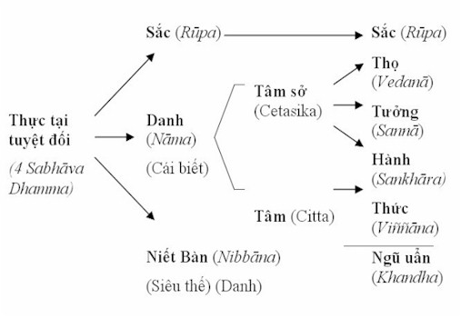

|
Minh Sát Tu Tập ACHAAN NAEB MAHANIRANONDA Tỳ kheo PHÁP THÔNG dịch
IV. TỨ THÁNH ÐẾ (ARIYASACCA) Trong phần trước (III), chúng ta đã thấy rằng mục đích của 37 Pháp Trợ Giác Ngộ là chứng ngộ Tứ Thánh Ðế (xem đồ hình 1). Tứ Thánh Ðế bao gồm:
Khổ Ðế (Dukkhasacca) - Năm Uẩn hay Danh-Sắc là
khổ. 1. Khổ Ðế -- Dukkhasacca Khổ đế được biểu thị bằng đặc tính bất an, không ổn định của cả thân và tâm. Thân bất an do thọ khổ và tâm bất an do luôn luôn hướng tìm những đối tượng khả lạc, thực ra, lạc ấy chỉ là để chữa khổ. Người đoạn tận khổ không còn phải đi tìm những đối tượng khả lạc, mà bản thân họ đã có sự an lạc và tri túc. Trong cuộc sống, chúng ta (Danh-Sắc) luôn luôn khổ. Ðây là sự thực và cái khổ này không thể chữa được. Chỉ có khổ thọ (dukkha-vedanā) và hành khổ (sankhāra-dukkha) mới có thể chữa được. Trong mọi oai nghi, Danh-Sắc luôn luôn có khổ. Có hai loại khổ đế căn bản, đó là, khổ với phiền não (kilesa), hay khổ tâm và khổ với quả (vipāka) hay khổ thân. Loại khổ thứ nhất (khổ tâm) có thể loại trừ được trong kiếp sống này, ngay ở đây và bây giờ, bằng cách thực hành vipassanā cho đến khi đắc A-la-hán quả. Loại khổ thứ hai (khổ quả), không thể diệt được trong kiếp sống này. Nếu một vị A-la-hán còn sống, vị ấy vẫn phải chịu khổ quả này. Vipāka là "quả" hay "kết quả", trong trường hợp này muốn đề cập đến cái khổ được xem là kết quả tự nhiên của việc tái sanh do có danh và sắc. Danh và sắc tự thân chúng là quả của việc tái sanh, do vô minh (avijjā) và ái (tanhā) tạo ra. Nó chỉ có thể bị diệt trừ khi không còn tái sanh -- tức là phải đắc Vô Dư Niết Bàn, và như vậy loại trừ được Năm Uẩn. Có thể phân chia khổ theo các cách sau: 1.1 Bốn loại khổ: a) Thọ khổ (dukkhavedanā), cái khổ thông thường ở thân (trong pháp hành, danh biết được khổ thọ này) và khổ tâm phát sanh do sự đau nhức nơi thân. Ngoại trừ các bậc A-la-hán, các Ngài chỉ cảm thấy khổ thân chứ không còn khổ tâm nữa. b) Hành khổ (dukkhasankhāra), là sự tạo tác hay bất định của thân tâm. Trong pháp hành, khổ này được chuyển đổi bằng việc thay đổi oai nghi. Hành khổ khó thấy hơn thọ khổ. c) Khổ tướng (dukkhalkkhana), là một trong ba đặc tánh của Danh-Sắc: vô thường, khổ, vô ngã. Khổ này được chứng nghiệm ở Tuệ thứ tư trong 16 Tuệ minh sát -- Tuệ quán xét sự sanh diệt của danh pháp và sắc pháp (Udayabbayañāṇa). d) Khổ đế (dukkhasacca), là sự thực về khổ, cho thấy rằng khổ là cố hữu, một chân lý bất di bất dịch. Loại khổ sanh cùng với phiền não có thể tẩy trừ bằng sự chứng đạt A-la-hán Ðạo; nhưng đây là loại khổ quả và chỉ có thể đoạn trừ khi không còn tái sanh. Thọ khổ, ví như bệnh nhân trong bệnh viện. Hành khổ, ví như người y tá cảm thấy khó chịu khi phải chăm sóc bệnh nhân. Hành giả sơ cơ trước tiên phải nhận rõ thọ khổ, bởi vì nó dễ thấy hơn các loại khổ khác. Kế tiếp, hành khổ sẽ theo sau, đây là loại khổ khó thấy hơn thọ khổ. Trong khi đó, khổ tướng phải có tuệ minh sát mới nhận biết được. Khi khổ đế được chứng ngộ bằng trí tuệ, lúc ấy hành giả chỉ thấy có khổ trong thế gian chứ không có lạc. Khi khổ đế được nhận biết thì cả Tứ Thánh Ðế cũng được chứng ngộ vậy. 1.2 Mười một loại khổ mà Ðức Phật đã khám phá: Ðó là: Sanh; Già; Chết; Sầu; Bi; Khổ; Ưu; Não; Cầu bất đắc; Ái biệt ly; Oán tăng hội khổ. Ba loại đầu thuộc về khổ quả (vipāka), tám loại sau thuộc về khổ đi kèm với phiền não (kilesa). Tất cả các loại khổ đó đều do chấp thủ năm uẩn. Sự sanh của năm uẩn là khổ đế. Ở đây, khổ phát sanh do sáu căn (mắt, tai, mũi, lưỡi, thân và ý). Chẳng hạn, khi mắt gặp đối tượng thì đó là sắc uẩn (rūpakhandha). Nhưng cái thấy (hay nghe v.v...) là thức uẩn (viññānakhandha). Thức uẩn gồm ba tâm sở là thọ uẩn, hành uẩn và tưởng uẩn. Như vậy, gộp chung lại, chúng tạo thành năm uẩn, và khi năm uẩn có mặt thì khổ đế có mặt. Ðối với các căn khác cũng tương tự. Trong Ðạo Phật, khi chúng ta nói "thế gian", nghĩa là chúng ta muốn nói đến thế gian của năm uẩn, hay thế gian của sở y xứ hay lục xứ (āyatana).
Ðối nghịch của khổ là lạc (sukha), nhưng lạc thì vô thường và không thể tồn tại mãi nên nó cũng là khổ; và bởi lẽ nó nằm ngoài sự kiểm soát nên nó hoàn toàn vô ngã. Ðể đoạn tận khổ, chúng ta phải nhận rõ khổ qua pháp hành. Thấy được khổ bằng trí tuệ sẽ đưa chúng ta ra khỏi vòng luân hồi. Bởi vì phiền não rất mạnh và dai dẳng nên nhất thiết phải dùng trí tuệ mới nhận chân được khổ và loại trừ nó. Khi quán khổ, hành giả phải dùng Danh-Sắc trong sát-na hiện tại làm đối tượng, vì Danh-Sắc là khổ đế. Càng thấy khổ bằng trí tuệ, hành giả càng được nhiều lợi ích trong pháp hành. Lợi ích này chính là sự tẩy trừ tham ái. Ngược lại càng thấy lạc, khổ sẽ càng bị che lấp và pháp hành sẽ không đem lại lợi ích. Một số hành giả thay vì hành thiền để thấy khổ, lại đắm chìm trong lạc (của định), và phát triển lòng tham đối với lạc ấy. Cái họ thích, thực sự là năm uẩn. Năm uẩn có thọ khổ (dukkhavedanā), thọ lạc (sukhavedanā), thọ xả (upekkhāvedanā). Vì vậy, họ thích thọ lạc, tức thích năm uẩn. Chứng nghiệm lạc này, hành giả có thể nghĩ đó là Niết Bàn. Tuy nhiên, chính thọ lạc này khiến họ không thể loại trừ được phiền não, không làm phát sanh sự nhàm chán đối với Danh-Sắc, như Niết Bàn thực sự làm. Niết Bàn nằm ngoài năm uẩn. Trưởng lão ni Vajirā, một vị Thánh A-la-hán vào thời Ðức Phật, sau khi chứng ngộ đã thốt lên bài kệ:
2. Tập Ðế -- Samudayasacca Tập đế -- Thánh đế thứ hai -- là nhân sanh của khổ, được xem là ái hay tanhā. Có ba loại ái: a) Dục ái -- Kāmatanhā, tức là sự tham muốn của năm căn (mắt, tai, mũi, lưỡi, thân) đối với năm dục trưởng dưỡng hay năm trần cảnh (kāmaguṇa -- sắc, thanh, hương, vị, xúc khả ái). Nếu không có sự khả ái trong các dục trần thì sẽ không có dục ái. Chẳng hạn, nếu hành giả có lục căn thu thúc giới (indriyasamvarasīla) đối với các căn, hành giả sẽ không có dục ái vào lúc đó. Dục ái hoàn toàn bị tẩy trừ ở A-na-hàm đạo (Anagamimagga) -- tức khi hành giả trở thành vị Thánh Bất Lai. b) Hữu ái -- Bhavatanhā. Bhava nghĩa đen là "trở thành", ở đây muốn nói đến sự hiện hữu, tái tục và luân lưu trong vòng luân hồi. Có ba mươi mốt cõi hữu, hay trạng thái trở thành, từ việc sanh trong các cõi khổ đến các cõi trời cao nhất. Chính bhavatanhā này khiến cho con người, dù bệnh hoạn, dù trọng thương hay tàn tật,... vẫn bám vào sự sống và rất sợ chết. Hữu ái được đoạn trừ ở A-la-hán đạo. c) Phi hữu ái -- Vibhavatanhā. Ðây là quan niệm của những người chủ trương "sự đoạn diệt", thường gọi là "đoạn kiến" cho rằng chỉ có một kiếp sống duy nhất và chết là hết. Do quan niệm chỉ có một kiếp sống duy nhất như vậy, những người chủ trương đoạn kiến này muốn hưởng thụ lạc thú càng nhiều càng tốt khi còn sống. Sát-na Nhập Lưu Ðạo sẽ diệt được phi hữu ái này. Tất cả mọi người đều có dục ái, nhưng từ dục ái này, chúng ta hoặc có hữu ái, hoặc có phi hữu ái, nghĩa là nó tùy thuộc vào sự khát khao hiện hữu hoặc không hiện hữu của mỗi cá nhân. Cả ba loại ái kể trên dẫn đến sự tái sanh trong một cuộc sống mới. 3. Diệt Ðế -- Nirodhasacca Diệt đế là sự diệt khổ. Về mặt ý nghĩa thì Diệt đế và Niết Bàn là giống nhau. Niết Bàn là Pháp (Dhamma) dập tắt mọi phiền não, và như vậy cũng diệt tận khổ đau. Ðiều này được thực hiện bằng sự dập tắt nhân sanh khổ, tức Tập Ðế hay ba Ái. Trong sát-na Niết Bàn, hoàn toàn không có khổ, bởi vì ở đó năm uẩn đã bị dập tắt. Sự kiện này xảy ra ngắn ngủi trong một sát-na tâm gọi là Maggacitta (tâm đạo). Khi hành giả nhận rõ khổ bằng trí tuệ, hành giả tuệ tri rằng Ái chính là nhân, đồng thời tuệ tri luôn cái cần phải diệt là Ái. Khi nhân diệt, thời quả diệt. Khi Ái đã hoàn toàn tận diệt, Niết Bàn tối hậu được đạt đến. Nếu hành giả không nhận ra Ái là tai họa, hành giả không thể nào chứng Niết Bàn và diệt khổ. Niết Bàn là "sự dập tắt những ngọn lửa tham, sân, si; là vô vi pháp; là mục đích tối hậu, cứu cánh của Ðạo Phật; là sự giải thoát, sự tận diệt của mọi khổ đau và phiền não" [1]. Ðặc tính của Niết Bàn là sự an lạc, tịch tịnh và thoát khỏi mọi phiền não (kilesa). Người thấy được Niết Bàn là lợi ích và đáng tầm cầu, cũng là người sẽ nhận ra cái khổ trong thế gian (năm uẩn). Nếu ai nghĩ thế gian là lạc, Niết Bàn hoàn toàn vô nghĩa đối với người ấy. Không có tái sanh trong Niết Bàn, do đó không có sự chết ở đó. Niết Bàn không có Danh-Sắc hay năm uẩn; Danh-Sắc cũng không còn là đối tượng của sự minh sát. Niết Bàn không phải là một trú xứ, nhưng vẫn hiện hữu. Niết Bàn tựa như gió, bạn không thấy mà chỉ cảm nhận được nó nhờ tác dụng mát mẻ mà nó mang lại. Niết Bàn là đối tượng của một tâm đặc biệt gọi là Tâm Ðạo. Phàm phu còn đắm trong phiền não, do đó Niết Bàn không thể khởi lên nơi người ấy -- trừ phi họ áp dụng pháp hành Vipassanā có kết quả. Do vậy khi hành Vipassanā, tâm của hành giả trở nên thanh tịnh, tâm đó được gọi là maggacitta, có Niết Bàn làm đối tượng. Niết Bàn không phải là tâm, mà là đối tượng của tâm đạo (maggacitta) trên. Người chứng được Niết Bàn sẽ tự mình biết -- không cần một vị đạo sư nói cho họ biết. Không ai có thể đạt đến Niết Bàn mà không thực hành vipassanā cho đến khi tuệ vipassanā trở thành tâm đạo (maggacitta) cả. Niết Bàn là sự chấm dứt khổ, bạn không thể chứng ngộ Niết Bàn nếu không đi theo Con Ðường Bát Chánh. Có hai loại Niết Bàn:
4. Ðạo Ðế -- Maggasacca Ðạo Ðế là Bát Thánh Ðạo đưa đến sự diệt khổ. "Magga" là con đường, và con đường ấy dẫn đến Niết Bàn là pháp diệt khổ. Chỉ một con đường duy nhất đi theo Bát Thánh Ðạo là thực hành Tứ Niệm Xứ (Satipaṭṭhāna), pháp đầu tiên trong 37 Pháp Trợ Bồ Ðề, dẫn đến sự tịnh hóa hay diệt trừ phiền não. Bát Thánh Ðạo bao gồm Giới, Ðịnh, Tuệ -- là con đường duy nhất để đoạn tận khổ đau. Chánh Kiến (Sammā-diṭṭhi). Thấu triệt Tứ Ðế là thấu triệt thực tánh của vạn pháp, hay thấy vạn pháp đúng như bản chất của chúng. Nếu đó là pháp hiệp thế, Danh-Sắc là đối tượng; nếu là siêu thế, Niết Bàn là đối tượng. Chánh Tư Duy (Sammā-sankappa) gồm ba loại: tư duy xuất ly (nekkhama), tư duy vô sân (abyāpāda), tư duy vô hại (ahimsa). Chánh tư duy giúp cho tinh tấn -- chánh niệm -- tỉnh giác vận hành chuẩn xác trong Tứ Niệm Xứ. Chánh Kiến và Chánh Tư Duy thuộc yếu tố TUỆ (paññā) trong Bát Thánh Ðạo. Chánh Ngữ (Sammā-vācā) là không nói dối, không nói lời thô ác, không nói lời vô ích hay những lời đem lại sự tai hại cho người khác. Căn bản của các khẩu nghiệp là tham, sân, si. Nếu có chánh tư duy, chúng sẽ không xảy ra. Chánh Nghiệp (Sammā-kammanta), hành động chân chánh, như giữ giới,... Chánh tư duy sẽ bảo đảm cho hành động chân chánh này. Chánh Mạng (Sammā-ājīva), nghề nghiệp chân chánh, tức không làm những nghề tai hại như mua bán vũ khí,... Ngay cả việc ăn để chữa khổ cũng là một hình thức của chánh mạng. Chánh Ngữ, Chánh Nghiệp, Chánh Mạng thuộc yếu tố GIỚI trong Bát Thánh Ðạo. Chánh Tinh Tấn (Sammā-vāyāma), là Tứ Chánh Cần loại trừ các phiền não. Tứ chánh cần giúp cho Ðịnh và Tuệ nảy sanh. Chánh Niệm (Sammā-sati). Chánh niệm ở đây đề cập đến niệm trong Tứ Niệm Xứ. Chánh niệm tùy thuộc vào chánh tinh tấn để phát triển. Chánh Ðịnh (Sammā-samādhi), là sự nhất tâm hay định tâm trong sát-na hiện tại đối với Tứ Niệm Xứ. Muốn được hoàn thiện, chánh định cần phải có sự trợ giúp của chánh tinh tấn và chánh niệm. Chánh định đúng nghĩa phải phát xuất từ bốn nền tảng chánh niệm - tức Tứ Niệm Xứ. Chánh Tinh Tấn, Chánh Niệm, Chánh Ðịnh thuộc về yếu tố ÐỊNH trong Bát Thánh Ðạo. "Ðạo" ở đây chúng ta muốn nói với ý nghĩa gì? Ðạo là con đường, và chỉ một con đường duy nhất -- con đường dẫn đến sự giác ngộ. Song "con đường" ấy gồm có tám yếu tố. Như vậy, Bát Thánh Ðạo cũng như một viên thuốc có tám thành phần, chỉ cần uống một là đủ. Bát Thánh Ðạo được Ðức Phật khám phá, và trước thời của Ngài không có Bát Thánh Ðạo. Bát Thánh Ðạo là Pháp Trung Ðạo -- Majjhimāpatipadā. Trung Ðạo này hủy diệt si (moha). Khi si đã bị hủy diệt hoàn toàn, Tứ Thánh Ðế được chứng ngộ. Thực ra, Bát Thánh Ðạo là tám tâm sở (cetasika) [2]. Nó không có một tự ngã hay linh hồn nào cả. Nó là thực tánh pháp -- sabhāva. Như vậy không có người liễu tri Khổ, không có người diệt Tập, không có người chứng Diệt, và không có người tu Ðạo [3]. Trí Tuệ chứng ngộ Tứ Thánh Ðế:
Do ái (nhân) bị đoạn trừ, "thế gian" của năm uẩn được đoạn trừ, và như vậy khổ cũng dứt theo. Trí tuệ chứng ngộ Tứ Thánh Ðế này chỉ được thấy trong Ðạo Phật. Như Thanh Tịnh Ðạo (Visuddhi Magga) nói: Khổ Ðế tựa như gánh nặng; Tập Ðế như người mang gánh nặng; Diệt Ðế là đặt gánh nặng xuống; Ðạo Ðế là cách để đặt gánh nặng xuống. (Samyutta Nikāya, III, 26) V. THIỀN MINH SÁT (VIPASSANĀ) Vipassanā [4] (minh sát) là pháp hành duy nhất có thể dẫn hành giả đến chỗ đoạn tận khổ đau. Ðây là cứu cánh tối thượng của Ðạo Phật, do đó hành giả cần phải hiểu Vipassanā là gì. Vipassanā là loại tuệ (paññā) biết rõ Danh-Sắc là vô thường, khổ và vô ngã. Các tuệ khác không phải là tuệ vipassanā (minh sát). Chỉ có tuệ nào biết rõ Danh-Sắc là vô thường, khổ, vô ngã mới được gọi là vipassanà. Thanh Tịnh Ðạo nói đây là trí tuệ thù thắng. Ðối tượng của vipassanā là Danh-Sắc trong sát-na hiện tại. Nếu bạn biết cái gì ngoài Danh-Sắc của mình, bạn không thể thấy được thực tánh pháp (sabhāva). Phận sự của vipassanā là tiêu diệt phiền não bất cứ nơi nào chúng nảy sanh. Do đó, chúng ta thực hành để quán sát sát-na hiện tại nơi sáu căn môn, bởi vì phiền não khởi sanh ở những nơi ấy. Lợi ích của vipassanā là diệt điên đảo tưởng (vipallāsa) nghĩ rằng sắc là đẹp (tịnh), Danh-Sắc là thường, Danh-Sắc là lạc, Danh-Sắc là tự ngã. Khi tuệ vipassanā phát triển mạnh, nó sẽ dẫn đến sự đoạn tận khổ (nirodha) và đó cũng là Niết Bàn. Pháp hành vipassanā sử dụng Tứ Niệm Xứ như đã được mô tả trong Kinh Ðại Niệm Xứ (Mahāsatipaṭṭhānasutta). Các pháp cần biết là:
a) Sáu Vipassanā Bhūmi (tri kiến căn bản)
[5]
Vipassanā Bhūmi (tri kiến minh sát căn bản) là những đối tượng mà hành giả cần phải quán sát khi hành vipassanā nhằm giúp cho tuệ minh sát (vipassanā paññā) khởi sanh. Có sáu Bhūmi là Năm Uẩn (khandha); 12 Xứ (Ayatana); 18 Giới (Dhatu); 22 Quyền (Indriya); Tứ Thánh Ðế và Thập Nhị Nhân Duyên. Tất cả sáu bhūmi này rút gọn lại chỉ là Danh và Sắc, bởi vì khi đến giai đoạn thực hành vipassanā hành giả chỉ có quán Danh-Sắc mà thôi. Danh-Sắc là những đối tượng được thấy bởi tuệ minh sát. Tuệ tri Danh-Sắc là vô thường, khổ và vô ngã chính là nhiệm vụ của tuệ minh sát -- chính nó sẽ hủy diệt phiền não. Vipassanā Bhūmi là pháp học hay lý thuyết, nghĩa là hành giả phải biết nó như một tri kiến căn bản cho việc hành minh sát. Vipassanā Bhūmi là các thực tánh pháp rất thâm sâu, uyên áo, cho nên hành giả cần phải nghiên cứu kỹ lưỡng, hiểu thật thấu đáo, để khi đến giai đoạn thực hành mới biết cách để quán sát chúng (Danh-Sắc). Chẳng hạn, hành giả phải biết về 12 Xứ (ayatana) hoặc bốn oai nghi. Nếu không thông hiểu lý thuyết (pariyatti) và không biết cách để quán sát Danh-Sắc, hành giả không thể hành vipassanā đúng cách, do đó sẽ không đem lại kết quả. Pháp học trợ duyên cho pháp hành (patipatti) và đưa đến kết quả, bởi vì pháp học, pháp hành và pháp thành (pativedha) tùy thuộc lẫn nhau, không thể tách rời. Vipassanā phải nhận thức được Quy Luật Tự Nhiên hay còn gọi là Tam Tướng của mọi hiện hữu -- vô thường, khổ, vô ngã. Nếu một người không biết Quy Luật Tự Nhiên -- đó là do vô minh (avijja), vì vậy mà xoay vần mãi trong vòng luân hồi, không thể đoạn tận khổ. Trong Kinh định nghĩa vô minh như không hiểu biết Tứ Thánh Ðế. Vậy không biết Quy Luật Tự Nhiên thì không thể chứng ngộ Tứ Thánh Ðế và đó chính là sự vô minh. Ba loại Tuệ trong pháp hành
Lý thuyết đúng sẽ dẫn đến thực hành đúng, và thực hành đúng sẽ dẫn đến tuệ giác hay minh sát tuệ. Vipassanā bhāvanā (Minh sát tu tập) khác với Samatha bhāvanā (Tịnh chỉ tu tập). Nếu không hiểu điều này, hành giả có thể lẫn lộn, và như vậy tuệ minh sát không thể nảy sanh, không thể đoạn tận khổ. Samatha bhāvanā là thiện pháp (kusala), song nó chỉ dẫn đến sự vắng lặng nội tâm, vẫn phải chịu luân hồi. (Xem sự khác biệt giữa Thiền Ðịnh và Thiền Tuệ, phần IX.) Samādthi (Ðịnh) Samādhi là sự tập trung hay định tâm. Samādhi rất hữu ích trong thiền minh sát, nhưng chỉ ở mức định từng thời hay sát-na định là đủ. Có ba loại định: Sát-na định (khanikasamādhi); Cận hành định (upacārasamādhi); An chỉ định (appanāsamādhi). Lý do chúng ta phải dùng sát-na định để hành minh sát là vì sát-na định lúc nào cũng vẫn được duy trì trên sáu căn. Chẳng hạn, khi các đối tượng thay đổi từ sắc ngồi đến danh nghe (từ ý căn đến nhĩ căn), sát-na định này có thể theo sát sự thay đổi ấy. Sát-na định là lợi khí căn bản để giúp cho tuệ minh sát (vipassanā paññā) vận hành. Chính sự thay đổi này cho phép hành giả thấy được sự sanh và diệt của tâm. Khi tính chất vô thường của tâm được nhận ra, nó cho thấy tâm nằm ngoài sự kiểm soát (của hành giả), và như vậy là khổ và vô ngã. Cận hành định chỉ là sự nhất tâm, nó không thể được dùng để thấy sự sanh và diệt của tâm. Tính chất vô thường của tâm phải được nhận ra bằng trí tuệ chứ không phải bằng định. --ooOoo-- VI.
SÁT-NA HIỆN TẠI & THỰC TÁNH PHÁP 1. Sát-na hiện tại (ārammaṇapaccuppannā) [7] Sát-na hiện tại có thể được định nghĩa như là một thời điểm nảy sanh của danh và sắc, được nhận biết bằng ba Danh là tinh tấn (ātapī), chánh niệm (sati) và tỉnh giác (sampajjañña) -- gọi tắt là yogavacara -- độc lập với ước muốn của con người. Muốn nhận thức rõ sát-na hiện tại chúng ta phải biết, đối tượng của ba Danh (làm nhiệm vụ quán sát) phải là thực tại tuyệt đối (paramattha), tức là Danh và Sắc; đối tượng ấy phải nằm trong Tứ Niệm Xứ (thân, thọ, tâm, pháp); khi thực hành, cũng không nên lẫn lộn các đối tượng. Chẳng hạn, khi đang quán sắc ngồi, nếu có sự đau nhức, đừng quán danh biết điều đó. Chỉ cần biết sắc ngồi khổ là đủ, tức là chỉ nên quán "thân trong thân"; Danh và Sắc cần được thấy trong sát-na hiện tại, nghĩa là phải được thấy ở một thời điểm độc lập với ý muốn chủ quan của chúng ta. Chúng ta không thể tạo ra Danh-Sắc, chẳng hạn cố tình đi thật chậm với mục đích làm cho tuệ phát sanh, hoặc cố tình co tay, duỗi chân thật chậm để thấy các kalapa (tổng hợp) đang sanh và diệt. Ðó không phải là sát-na hiện tại. Một ví dụ cho thấy sát-na hiện tại thực sự là sự tỉnh thức (sati-sampajjañña) đang quán sát sắc ngồi, nhưng hơi có một chút phiền não -- có thể là một mong ước muốn thấy sắc ngồi. Bất ngờ một tiếng sấm nổ, sự tỉnh thức buông sắc ngồi và nghe tiếng sấm. Danh nghe ấy phát sanh một cách tự động. Ðây là sát-na hiện tại thực sự (vipassanā), bởi vì không có phiền não ở sát-na đó. Có hai loại sát-na hiện tại, đó là, sát-na hiện tại của tuệ thẩm nghiệm (thẩm tra, thẩm sát) (cintā ārammanapaccuppañña) và sát-na hiện tại của tuệ minh sát (vipassanā-paññā ārammanapaccuppañña). Tuệ thẩm nghiệm sát-na hiện tại là sự nhận biết trong khi hành thiền bình thường, nó đi trước và dẫn đến tuệ minh sát, theo cách hai thanh củi khô xát vào nhau sanh ra lửa. Nếu pháp hành được thực hiện một cách chuẩn xác với sát-na hiện tại, nó sẽ hủy diệt tham (abhijjha) và sân (domanassa) trong năm uẩn. Lúc đó, tuệ minh sát sẽ phát sanh. Sát-na hiện tại minh sát rất khó nắm bắt, cũng giống như bắt một con cá trong hồ bằng hai tay không. Hành giả nhận ra "sắc ngồi" chứ không phải "ta ngồi". Cũng không phải "ta" biết sắc ngồi, mà đó là Ba Danh (tinh tấn, chánh niệm, tỉnh giác) biết. Thực ra, sắc ngồi đó cũng không có, chỉ có thực tánh pháp (sabhāva) mà thôi. Ngay cả Danh biết (đối tượng) sắc ngồi cũng là thực tánh pháp. Sát-na hiện tại minh sát sở dĩ khó nắm bắt là vì sự hiện diện của phiền não. Nắm bắt sát-na hiện tại minh sát cũng giống như cố gắng đọc khi chưa học các mẫu tự. Chừng nào ta chưa biết các mẫu tự, ta không thể nhận ra các chữ. Ngay cả khi thay đổi oai nghi cũng cần phải duy trì sát-na hiện tại, nếu không, phiền não sẽ xen vào. Khi sát-na hiện tại được duy trì một cách liên tục, phiền não sẽ bị ngăn chận và sát-na hiện tại minh sát sẽ phát sanh để diệt si mê (moha). Làm thế nào để hành giả biết được họ đang trong sát-na hiện tại? Hành giả phải có chánh niệm - tỉnh giác liên tục. Nếu có chánh niệm - tỉnh giác, thì đó là sát-na hiện tại. Hoặc ngược lại, có sát-na hiện tại là có chánh niệm - tỉnh giác. Hành giả phải thường xuyên ở trong sát-na hiện tại. Nếu được như vậy, chân lý (sự thực) sẽ xuất hiện; sự thực đó là khổ (dukkha) -- Danh-Sắc là khổ. Chánh niệm - tỉnh giác vận hành cùng nhau trong sát-na hiện tại của Danh-Sắc và hủy diệt tham sân trong "thế gian" của năm uẩn. Pháp hành này đưa hành giả đến thực tánh pháp, làm thay đổi tà kiến nghĩ rằng Danh-Sắc là "Ta". 2. Thực Tánh Pháp (Sabhāva Dhamma) Sabhāva Dhamma là thực tánh của vạn pháp trong thế gian. Nó là thực tại, song không phải là đàn ông hay đàn bà, vật thể hay linh hồn, v.v... Chẳng hạn, sắc ngồi là thực tánh của oai nghi ngồi. Thực sự, khi đã chứng được thực tánh pháp thì ngay cả sắc ngồi cũng không có, chỉ có sabhāva mà thôi. Vũ trụ không rỗng không thực tại, như một số giáo phái chủ trương, mà nó chỉ rỗng không tự ngã hay linh hồn. Thực tánh pháp gồm có Danh và Sắc, với Danh được chia làm ba phần, như biểu đồ dưới đây: Hình 2  Bốn yếu tố của thực tại tuyệt đối là Sắc (rūpa), Tâm (citta), Tâm sở (cetasika), Niết Bàn (Nibbāna). Cả bốn yếu tố này đều là Pháp hiện tại (paccuppanna), cũng là thực tánh pháp, nhưng chúng ta không phải lúc nào cũng thấy được nó. Ba yếu tố đầu là Danh và Sắc -- Danh gồm Tâm và Tâm sở -- là pháp hiệp thế. Sắc trong pháp hành chỉ là đối tượng, nó "vô tri". Danh vừa là chủ thể, vừa là đối tượng, như danh thấy, danh nghe v.v... Ðây là những pháp thế gian (lokiya), còn nằm trong vòng luân hồi. Niết Bàn là pháp siêu thế (lokuttara), là đối tượng của sát-na tâm đạo (maggacitta) và tâm quả (phalacitta). Chính tâm đạo diệt phiền não. Trong lãnh vực hiệp thế, chánh niệm - tỉnh giác (sati -- sampajjañña) là tuệ vipassanā. Trong siêu thế, chánh niệm - tỉnh giác trở thành tâm đạo. Thực ra tâm đạo ở đây muốn nói đến sự hoàn tất con đường -- Ðạo Trí (Magga-ñāṇa), Tuệ thứ mười bốn trong mười sáu Tuệ minh sát. Niết Bàn là pháp siêu thế (lokuttara-dhamma), nằm ngoài năm uẩn. Có hai loại hiện tại (paccuppañña), đó là, pháp hiện tại (paccuppaññadhamma) và sát-na hiện tại (paccuppaññārammana). Ở pháp hiện tại, Danh-Sắc sanh diệt rất nhanh. Chúng ta không thấy được hiện tượng này vì bị phiền não che án. Chỉ có sắc ngồi, sắc đứng, danh thấy, danh nghe,... chứ không phải "chúng ta ngồi", "chúng ta nghe",... Ðây là pháp hiện tại, nó hiện hữu cho dù chúng ta có thấy hay không, ở mọi nơi, mọi lúc nó đều hiện hữu như vậy. Ở sát-na hiện tại, Danh-Sắc được thấy ở một thời điểm độc lập với ý muốn của chúng ta. Khi thực hành, chúng ta dùng pháp hiện tại và nó sẽ phát triển thành sát-na hiện tại. Muốn có sát-na hiện tại, chánh niệm - tỉnh giác phải trực nhận Danh-Sắc trong sát-na hiện tại, tức là ba đối tượng (sắc, tâm, tâm sở) được thấy mà không có phiền não. Danh-Sắc là những đối tượng minh sát cho đến khi phát sanh Tuệ thứ mười hai (Thuận thứ tuệ, anuloma-ñāṇa). Lúc này, Niết Bàn trở thành đối tượng của tâm đạo và tâm quả, hành giả đạt đến trạng thái siêu thế. Danh-Sắc được quán sát ở sát-na hiện tại có thể là thiện (kusala), bất thiện (akusala) hay vô ký (abyakata), nhưng nhất thiết phải là một trong bốn nền tảng chánh niệm (tức thân, thọ, tâm, pháp). Vipassanā chỉ được thực hành khi phiền não có mặt (bậc A-la-hán không còn phiền não, không cần hành vipassanā). Nó cũng phải được áp dụng vào nơi nào phiền não có mặt. Chẳng hạn, khi nghe một âm thanh, phiền não (vô minh) khiến chúng ta nghĩ rằng "chúng ta nghe", lúc đó, vipassanā nhắc chúng ta rằng đó là "danh nghe" và tẩy trừ phiền não. -ooOoo- Vấn: -- Ba danh quán sát-na hiện tại (cintāpaccuppannarom) và ba danh nắm bắt sát-na hiện tại (vipassanāpaññāpaccuppannarom) có giống nhau không? Ðáp: -- "Sát-na hiện tại" thì giống nhau, nhưng ba danh quán và ba danh nắm bắt nó thì khác nhau. Hành giả phải thực hành để nắm bắt sát-na hiện tại, tựa như cách người ta phải học các mẫu tự A, B, C,... để đọc được chữ vậy. Tuệ thẩm nghiệm (cintā paññā) cũng giống như học A, B, C,... và tuệ minh sát, nối tiếp theo sau, giống như việc đọc chữ. Vấn: -- Làm thế nào hành giả có thể nâng cao cơ hội nắm bắt sát-na hiện tại của mình? Ðáp: -- Nếu hành giả có sự tỉnh thức (chánh niệm - tỉnh giác), hành giả sẽ không để tâm nhiều đến những gì đang diễn ra quanh mình, ngoài đối tượng mình đang quán sát, như sắc ngồi. Sát-na hiện tại của sắc ngồi sẽ làm mờ nhạt hay suy yếu các âm thanh khác. Vì thế, để gia tăng cơ hội nắm bắt sát-na hiện tại, hành giả cần phải có sự tỉnh thức cao độ. Vấn: -- Có nên chọn một oai nghi quy định nào đó để thấy sắc của oai nghi đó không? Ðáp: -- Hành giả không nên ngồi để thấy sắc ngồi, hoặc đi để thấy sắc đi. Tất cả các oai nghi cần phải sử dụng để chữa khổ từ oai nghi cũ. Chỉ khi ấy, sắc ngồi hoặc sắc đi mới có thể được thấy một cách tự nhiên, khi nó phát sanh. Vấn: -- Khi hành giả chánh niệm trong sát-na hiện tại, tự nhiên vị ấy có Giới, Ðịnh, Tuệ. Tại sao? Ðáp: -- Khi hành giả nhận thức sắc ngồi bằng tuệ minh sát, các phiền não thô (loại được chế ngự bằng giới) bị đè nén. Ðiều này chứng tỏ Giới có mặt. Các triền cái (nivarana) nhất thời được tẩy trừ. Ðiều này chứng tỏ Ðịnh có mặt. Cuối cùng, loại phiền não vi tế (lậu hoặc), tức tà kiến, cũng nhất thời được đoạn trừ. Ðiều này chứng tỏ Tuệ có mặt, bởi vì tuệ vipassanā đưa đến chánh kiến (sammādiṭṭhi) rằng không có "Ta" ngồi. VII.
TINH TẤN - CHÁNH NIỆM - TỈNH GIÁC - TÁC Ý CHÂN CHÁNH
- QUÁN SÁT PHÁP HÀNH ÐỊNH NGHĨA - Tinh tấn (ātāpi) nghĩa là sự nhiệt tâm trong pháp hành. - Niệm (sati) là sự chú tâm nơi đối tượng trong pháp hành (không nên nhầm lẫn với sự "chú ý", chỉ là "tưởng" - sañña - trong đời sống hàng ngày). Tất cả niệm đều là thiện (kusala) và có hai loại: Trong đời sống bình nhật hay trong lãnh vực hiệp thế, niệm luôn có mặt khi thực hiện các thiện nghiệp với ý thức, ví dụ, khi cúng dường vật thực cho các vị tỳ kheo... Trong pháp hành Tứ Niệm Xứ, đối tượng được nhận thức là Danh-Sắc trong sát-na hiện tại, niệm được dùng với nghĩa là "chánh niệm". - Tỉnh giác (sampajañña) là sự nhận biết đối tượng trong pháp hành. Nó luôn được dùng chung với chánh niệm. Chẳng hạn, chú tâm đến oai nghi ngồi là niệm, biết oai nghi đó là sắc ngồi là nhiệm vụ của tỉnh giác. Khi chánh niệm -- tỉnh giác hợp chung với nhau, nó được gọi là sự "tỉnh thức" (tiếng Thái gọi là rusuthua). Chánh niệm -- tỉnh giác được kinh điển mô tả như là những "pháp hỗ trợ chính" để đạt đến chánh kiến và chứng ngộ Thánh Ðạo. Ba pháp tinh tấn, chánh niệm, tỉnh giác ở trên được gọi là Ba Danh (Yogavacara). Có bốn pháp hỗ trợ chánh niệm - tỉnh giác:
- Tác ý chân chánh (yonisomanasikāra hay yoniso) là sự hướng tâm hay chú ý một cách đúng đắn đến đối tượng, tức hướng tâm với một sự hiểu biết chân chánh. Nó cũng muốn nói đến sự hiểu biết thực tánh của các pháp. - Quán sát pháp hành (sikkhāti - đúng nghĩa là học tập hay luyện tập - "to learn, to train oneself"). Tuy nhiên khi được dùng ở dây, nó có nghĩa là sự giữ pháp hành hay quán sát pháp hành) là sự "nhắc nhở" trong pháp hành. Nó "nhắc" chúng ta trở lại với pháp hành khi đánh mất sát-na hiện tại. LUẬN Tinh tấn (āpati) là sự kiên trì thiêu hủy phiền não (tham và sân) nhằm trợ giúp cho chánh niệm -- tỉnh giác gắn bó với sát-na hiện tại. Chánh niệm (sati) là sự chú tâm đến đối tượng, ví dụ như chú tâm đến oai nghi ngồi. Nhờ vậy, tỉnh giác (sampajañña) mới có thể biết đó là sắc ngồi. Thực ra, chính tinh tấn, chánh niệm và tỉnh giác làm nhiệm vụ quán sát sắc (rūpa) trong sát-na hiện tại. Chúng ta cần hiểu rõ điều này, bởi vì nhiều hành giả nghĩ rằng "họ" đang hành thiền, nhưng thực sự chỉ có Ba Danh (nāma - tinh tấn, chánh niệm, tỉnh giác hay yogavacara) đang hành mà thôi. Chánh niệm và tỉnh giác hủy diệt tham và sân, sau dó, Tuệ minh sát nảy sanh và hủy diệt si mê. Tác ý chân chánh, chánh niệm, tỉnh giác là trí tuệ hành (cintā paññā). Khi chánh niệm -- tỉnh giác hoạt động hoàn hảo, chúng trở thành Tuệ minh sát, song tác ý chân chánh vẫn là trí tuệ hành. Khi trí tuệ minh sát phát triển, chúng ta sẽ thấy rằng ngay cả chánh niệm và tỉnh giác cũng không phải là "chúng ta". Chánh niệm - tỉnh giác là những tâm sở và chúng phải chịu vô thường - khổ - vô ngã. Tác ý chân chánh là pháp cần yếu để giúp cho tinh tấn, chánh niệm, tỉnh giác vận hành đúng hướng và ngăn không cho tham, sân sanh khởi. Ví dụ, khi tác ý chân chánh và ba danh biết đối tượng chỉ là sắc ngồi thì dù có cảm giác đau nhức, hành giả sẽ không khởi tâm sân đối với cái đau ấy, bởi lẽ đó là sắc ngồi khổ chứ không phải "ta". Khi sắc ngồi chuyển sang một oai nghi khác, tác ý chân chánh cho ta biết sự thay đổi ấy là cần thiết để chữa khổ. Ðiều này ngăn được tâm tham khởi lên đối với oai nghi mới. Tác ý chân chánh là trí tuệ thực hành, nó đi trước chánh niệm - tỉnh giác. Ta có thể hình dung yoniso như đưa một người ra cánh đồng. Ở đó, họ cầm nắm lúa (chánh niệm) và đưa lưỡi hái ra cắt (tỉnh giác). Trong việc quán sắc ngồi cũng vậy, yoniso đưa ba danh đến và ba danh biết đây là sắc đang ngồi. Yoniso tác hành như một sự giới thiệu. Yoniso biết bằng trí tuệ thực hành, trước tiên đối tượng là sắc đang ngồi, rồi sau đó ba danh mới biết điều này. Chúng ta cần sử dụng yoniso một cách liên tục và thường xuyên, nếu không, chánh niệm - tỉnh giác không thể làm nhiệm vụ một cách chuẩn xác được. Khi bạn biết oai nghi ngồi là sắc ngồi bằng tuệ thực hành trước, đó chính là yoniso. Yoniso giúp cho chánh niệm - tỉnh giác hoạt động. Quán sát pháp hành (sikkhāti) cho chúng ta biết khi chúng ta có quá nhiều niệm và không đủ tỉnh giác. Chánh niệm và tỉnh giác cần phải được quân bình trong sát-na hiện tại. --ooOoo-- [1] Phật Học Từ Ðiển, Rashavoramuni Mahacunda Buddhist University, Bangkok. [2] Chánh Kiến: sở hữu trí tuệ; Chánh Tư Duy: sở hữu tầm; Chánh Ngữ: sở hữu chánh ngữ; Chánh Nghiệp: sở hữu chánh nghiệp; Chánh Mạng: sở hữu chánh mạng; Chánh Tinh Tấn: sở hữu cần; Chánh Niệm: sở hữu niệm; Chánh Ðịnh: sở hữu định. [3] Chỉ có Khổ hiện hữu, không có người thọ Khổ; có Nghiệp, nhưng không có người Tác Nghiệp; có Niết Bàn, nhưng không có người nhập Niết Bàn; có Ðạo, nhưng không thấy người tu Ðạo. (Visddhimagga, XVI). [4] Vipassanā thực sự là kết quả (tuệ giác) của việc hành Tứ Niệm Xứ -- tức là Tuệ thứ mười sáu. Tuy nhiên, ngày nay người ta đã dùng nó với nghĩa là Thiền minh sát. [5] Từ "Bhūmi" đúng nghĩa là giới vức hay lãnh vực của sự sống. Ở đây, Vipassanābhūmi có nghĩa là quán địa (các giới vức quán sát), hay tri kiến căn bản trong việc thực hành minh sát (xem bảng tóm tắt 12 xứ phần sau). [6] Theo đúng thuật ngữ, suta paññā là tuệ giác ngộ do nghe pháp mà đắc. Cintā paññā là tuệ tự giác ngộ không do một vị thầy nào cả. Chỉ có Ðức Phật mới có Cintā paññā. Tuy nhiên, trong pháp hành này, chúng ta dùng Suta paññā với nghĩa hiểu lý thuyết và Cintā paññā với nghĩa áp dụng lý thuyết vào thực hành. [7] Ārammanapaccuppannā hay paccuppannārammana đúng nghĩa là hiện tại sở duyên hay cảnh hiện tại; ở đây dùng từ này để chỉ cho sát na hiện tại của Danh - Sắc (present moment), một thoáng ngắn ngủi mà chỉ có chánh niệm -- tỉnh giác thực sự mới ghi nhận kịp -- ND. -ooOoo- Ðầu trang | Mục lục | 1.1 | 1.2 | 1.3 | 2.0 | 3.0 | 4.1 | 4.2 | 4.3 | 4.4 |
Chân thành cám ơn Tỳ kheo Pháp Thông đã gửi tặng bản vi tính (Bình Anson, 08-2003)
[Trở về
trang Thư Mục]
last updated: 20-08-2003